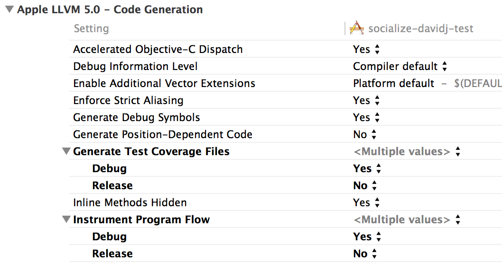

Table of contents
The Loopy SDK provides a simple set of classes and methods built upon the Loopy REST API.
App developers can elect to use either the pre-defined user interface controls provided in the Loopy UI framework, or “roll their own” using direct SDK calls.
All calls to the Loopy SDK are asynchronous, meaning that your application will not “block” while waiting for a response from the Loopy server.
Note
There are two options for installing the Loopy SDK: using CocoaPods, or via manual download and install.
CocoaPods is an easy, elegant way to manage library dependencies in iOS. No need to manually import frameworks or deal with compiler flags. After a one-time installation of RubyGems (CocoaPods is Ruby-based), a single command-line operation is all that’s needed to install or upgrade Loopy. For more information on CocoaPods, check out the CocoaPods homepage.
$ ruby -v
ruby 1.8.7 (2012-02-08 patchlevel 358) [universal-darwin12.0]
$ gem -v
2.1.5
$ sudo gem install cocoapods
$ pod setup
Note
Installing gem can take up to a minute, and may appear unresponsive for brief periods during install.
platform :ios
pod 'Loopy'
$ pod install
$ pod update
For those instances where CocoaPod install is not practical or desirable, the Loopy SDK can be installed manually, as follows:
Download and unzip the lastest iOS SDK release from the website. You can find it here: http://www.getsocialize.com/sdk/
Install the embedded static framework to your application.
To do this just drag and drop Loopy.embeddedframework folder from the package to your framework section in your project.
Note
Be sure to drag the outlying .embeddedframework folder, not just the framework. The .embeddedframework directory contains both the Loopy framework and the Loopy resources. If you just add the framework, you will be missing important Socialize images and configuration files.
Note
Be sure the ‘Create groups for any added folders’ radio button is selected during the above step. If you select ‘Create folder references for any added folders’, a blue folder reference will be added to the project and Loopy will not be able to locate its resources.
Add -ObjC and -all_load flag to the Other Linker Flags in the build settings of your application target. Please use the flag exactly as it is—the most common mistake here tends to be misspelling or incorrect capitalization.
For each of your application targets (or, if preferred, for the entire project), set the Debug setting of “Generate Test Coverage Files” and “Instrument Program Flow” in “Apple LLVM 5.0 - Code Generation” to “Yes”:
If you’re having problems please let us know by clicking on the ‘Feedback’ tab on the right side of the page. We’re here to help.
You can also search or post on our support forums
{kind=link}
{kind=link}
{kind=link}